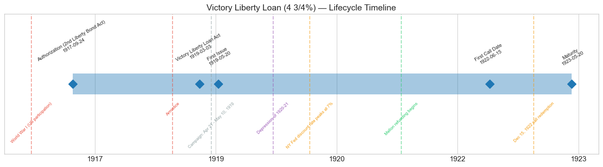
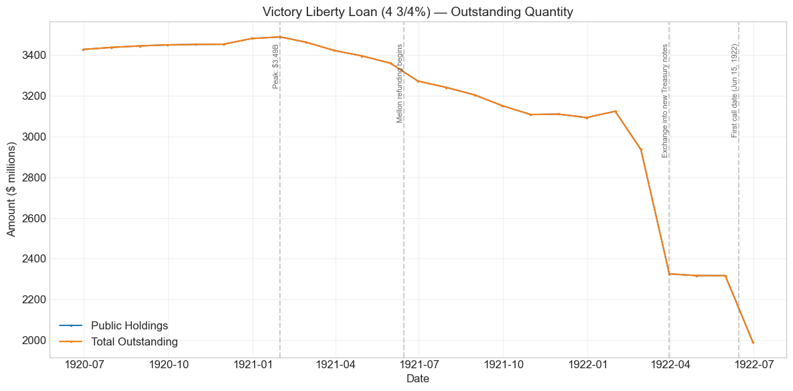
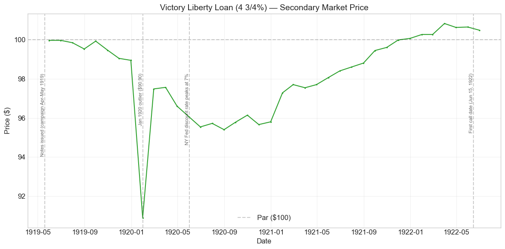
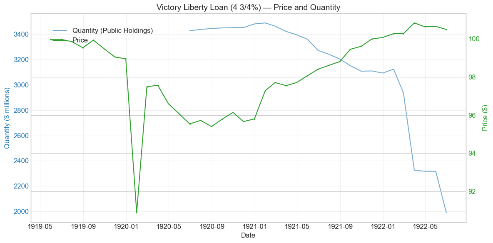
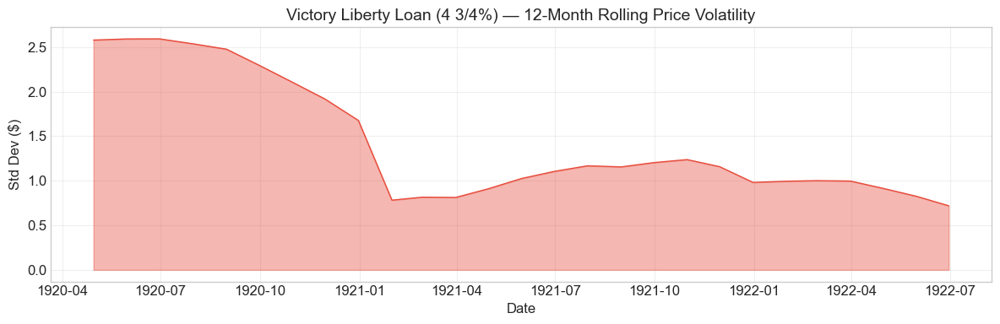

Bond Biography: Victory Liberty Loan (4 3/4%)#
An Enhanced Chapter from the Hall-Payne-Sargent US Federal Bond Database (2,857 issues, 1776–1960)
Bond ID (L1): 20170 Category: Interest Bearing > Marketable > Liberty Loan Coupon Rate: 4.75% First Issue Date: May 20, 1919 Term: 4 years — “Victory Notes of 1922–23” (callable June 15 and December 15, 1922; maturing May 20, 1923) Sold at Par: $100
import pandas as pd
import numpy as np
import matplotlib.pyplot as plt
import matplotlib.patches as mpatches
import datetime
import warnings
warnings.filterwarnings('ignore')
plt.style.use('seaborn-v0_8-whitegrid')
plt.rcParams.update({'figure.figsize': (12, 6), 'font.size': 12,
'axes.titlesize': 14, 'axes.labelsize': 12})
# Load the bond database
store = pd.HDFStore('../data/BondDF.h5', mode='r')
BondList = store['BondList']
BondQuant = store['BondQuant']
BondPrice = store['BondPrice']
store.close()
BondQuant_T = BondQuant.transpose()
BondPrice_T = BondPrice.transpose()
bond_id = 20170
print(f'Loaded data for: Victory Liberty Loan (4 3/4%) (ID: 20170)')
/Users/thomassargent/anaconda3/lib/python3.9/site-packages/pandas/core/arrays/masked.py:60: UserWarning: Pandas requires version '1.3.6' or newer of 'bottleneck' (version '1.3.5' currently installed).
from pandas.core import (
Loaded data for: Victory Liberty Loan (4 3/4%) (ID: 20170)
Overview#
The Victory Liberty Loan (4 3/4%) was the fifth and final loan of the Great War sequence — and the first one floated after the guns had stopped. Authorized by the Victory Liberty Loan Act of March 3, 1919, which amended the Second Liberty Bond Act of September 24, 1917 (the “Authorizing Act” recorded in the database), it was offered to the public in a nationwide campaign running from April 21 to May 10, 1919, five months after the Armistice. The notes were dated May 20, 1919, carried a 4.75% coupon paid semi-annually, and — in the sharpest possible break with the four Liberty Loans that preceded it — ran for only four years, maturing May 20, 1923, with the Treasury holding the option to call them on June 15 or December 15, 1922.
That shift from thirty-year and twenty-year bonds to a three-to-four-year note is itself the story. The war was over, but the bills were not paid: demobilization costs, outstanding certificates of indebtedness, and commitments to the Allies still had to be financed. Treasury Secretary Carter Glass — who had succeeded William Gibbs McAdoo in December 1918 — did not want to saddle the government with another generation-long bond at postwar interest rates. He wanted a bridge: a short obligation that would cover the fiscal gap of demobilization and then be paid off or refinanced once peacetime budgets returned to surplus. The Victory notes were that bridge, and they were retired exactly on that schedule — partly called in 1922, the remainder redeemed at maturity in May 1923.
Subscribers could choose between two interconvertible series: these 4 3/4% notes, exempt from state and local taxation and from the normal federal income tax but not from surtaxes, or 3 3/4% notes exempt from all federal, state, and local taxation (except estate and inheritance taxes). The tax-choice economics of that pairing belong to the companion chapter on the 3 3/4% series; the great majority of subscribers took the higher coupon, and this 4 3/4% series accounts for the bulk of the roughly $4.5 billion issue.
On the secondary market, the database records an average price of **\(98.20**, ranging from \)90.90 to $100.82, over 38 monthly observations from May 1919 to June 1922. Thirty-eight observations is a short record — the shortest of the five war loans, because the security itself was short — and this chapter is candid about what such a record can and cannot show. What it shows clearly is a note issued at par, discounted modestly during the monetary squeeze of 1920, and pulled back above par as rates fell and redemption approached: the price arithmetic of a short-dated Treasury note, an instrument that in 1919 was still a novelty and would soon become the workhorse of American debt management.
Historical Context#
The following major events shaped this bond’s brief lifetime:
Date |
Event |
Category |
|---|---|---|
1918-11-11 |
Armistice ends the fighting in Europe |
War |
1919-03-03 |
Victory Liberty Loan Act (amending the Second Liberty Bond Act) |
Legislation |
1919-04-21 to 1919-05-10 |
Victory Liberty Loan campaign — “Finish the Job” |
Fiscal |
1919-05-20 |
Notes dated and issued |
Fiscal |
1919-06-28 |
Treaty of Versailles signed |
Diplomacy |
1919-11 to 1920-06 |
Federal Reserve raises discount rates; New York reaches 7% by June 1920 |
Monetary |
1920-01-01 to 1921-07-01 |
Depression of 1920–21 |
Crisis |
1921-03-04 |
Andrew Mellon becomes Secretary of the Treasury; refunding program begins |
Fiscal |
1922-06-15 |
First call date — partial redemption of Victory notes |
Fiscal |
1922-12-15 |
Second call date — notes called by serial letter redeemed |
Fiscal |
1923-05-20 |
Maturity — remaining notes redeemed |
Fiscal |
The postwar moment. The United States entered 1919 victorious and exhausted. Four Liberty Loan drives had extracted over $17 billion from the public; a fifth campaign had been promised during the war, but the Armistice of November 11, 1918 removed its emotional engine. The Treasury nevertheless had to borrow: the deficit for fiscal 1919 was the largest in the nation’s history to that point, and billions in short-term certificates of indebtedness — issued in anticipation of the loan — had to be funded. Carter Glass’s answer was to make the terms attractive enough to sell without the war: the highest coupon of the whole Liberty sequence (4.75%), a short maturity, and a tax-exemption menu.
The Depression of 1920–21. The Victory notes spent their middle year in the sharpest deflation in American history. The Federal Reserve, freed after the Victory campaign from its wartime duty of supporting the bond market, pushed the New York discount rate from 4% in late 1919 to 7% by June 1920. Wholesale prices collapsed and unemployment surged. For the long Liberty bonds this tightening was punishing — the 4th Liberty Loan fell below \(85. For a note with three years to run, the same rise in yields produced only a modest discount: the Victory 4 3/4s spent 1920 in the mid-\)90s. Short duration was the note’s armor, and the contrast with its long-bond siblings (visible in the comparison chart below) is one of the cleanest illustrations of duration risk anywhere in the database.
The Great Depression, gold clauses, and 1933. These events appear in the auto-generated event list because the database’s Liberty Loan category extends into the 1930s, but they belong to other chapters: the Victory notes were fully retired by May 1923, six years before the crash, and never faced the gold-clause abrogation that made the 4th Liberty Loan famous. The Victory notes’ endgame was, instead, quietly orderly — which is precisely their historical point.
# Bond Lifecycle Timeline
fig, ax = plt.subplots(figsize=(14, 4))
# Key dates
dates = [('Authorization (2nd Liberty Bond Act)', '1917-09-24'),
('Victory Liberty Loan Act', '1919-03-03'),
('First Issue', '1919-05-20'),
('First Call Date', '1922-06-15'),
('Maturity', '1923-05-20')]
events = [('World War I (US participation)', '1917-04-06', 'war'),
('Armistice', '1918-11-11', 'war'),
('Campaign: Apr 21 - May 10, 1919', '1919-04-21', 'other'),
('Depression of 1920-21', '1920-01-01', 'crisis'),
('NY Fed discount rate peaks at 7%', '1920-06-01', 'monetary'),
('Mellon refunding begins', '1921-06-15', 'legislation'),
('Dec 15, 1922 call redemption', '1922-12-15', 'monetary')]
import matplotlib.dates as mdates
from datetime import datetime
# Plot bond lifetime bar
d0 = datetime.strptime(dates[0][1], '%Y-%m-%d')
d1 = datetime.strptime(dates[-1][1], '%Y-%m-%d')
ax.barh(0, (d1 - d0).days, left=mdates.date2num(d0), height=0.3,
color='#1f77b4', alpha=0.4, label='Bond Lifetime')
# Mark key dates
for label, date_str in dates:
d = datetime.strptime(date_str, '%Y-%m-%d')
ax.plot(mdates.date2num(d), 0, 'D', color='#1f77b4', markersize=10)
ax.annotate(f'{label}\n{date_str}', (mdates.date2num(d), 0.25),
ha='center', va='bottom', fontsize=8, rotation=30)
# Mark historical events
colors = {'war': '#e74c3c', 'crisis': '#9b59b6', 'legislation': '#2ecc71', 'other': '#95a5a6', 'monetary': '#f39c12'}
for name, date_str, cat in events:
d = datetime.strptime(date_str, '%Y-%m-%d')
ax.axvline(mdates.date2num(d), color=colors.get(cat, 'gray'), alpha=0.5, linestyle='--')
ax.annotate(name, (mdates.date2num(d), -0.25), ha='center', va='top',
fontsize=7, rotation=45, color=colors.get(cat, 'gray'))
ax.set_yticks([])
ax.xaxis.set_major_formatter(mdates.DateFormatter('%Y'))
ax.set_title('Victory Liberty Loan (4 3/4%) — Lifecycle Timeline')
ax.set_ylim(-1, 1)
plt.tight_layout()
plt.show()

Bond Features#
Feature |
Detail |
|---|---|
Name |
Victory Liberty Loan (4 3/4%) — “4 3/4% Convertible Gold Notes of 1922–23” |
Authorizing Act |
Second Liberty Bond Act (September 24, 1917), as amended by the Victory Liberty Loan Act (March 3, 1919) |
First Issue Date |
May 20, 1919 (campaign April 21 – May 10, 1919) |
Instrument |
Short-term gold notes — not bonds |
Term |
4 years — maturing May 20, 1923 |
Call Dates |
June 15, 1922 and December 15, 1922 (in whole or in part, on four months’ notice) |
Coupon Rate |
4.75% — the highest of the Liberty–Victory sequence |
Payment Frequency |
Semi-annual |
Callable |
Yes |
Payable in Coin |
Yes (gold) |
Price Sold |
Par ($100) |
Offered |
$4.5 billion |
Subscribed |
~\(5.25 billion (oversubscribed; allotments capped at \)4.5 billion) |
Subscribers |
~11.8 million |
Tax Status |
Exempt from state and local taxes and the normal federal income tax; subject to federal surtaxes |
Conversion |
Interconvertible with the fully tax-exempt 3 3/4% Victory note series (separate database ID) |
Two features deserve emphasis. First, the coupon: 4.75% was a full half-point above the 4.25% of the Third and Fourth Loans — Glass’s concession to a market no longer buoyed by wartime patriotism. Second, the conversion option between the two Victory series replaced the old privilege of converting into future higher-coupon loans; there would be no future loans to convert into. A subscriber’s choice between 4.75% taxable-at-the-margin and 3.75% fully exempt amounted to a bet on his own surtax bracket — a story told in full in the companion chapter on the 3 3/4% series.
# Display full bond features from database
row = BondList.loc[20170]
display_cols = [
"Treasury's Name Of Issue", 'Authorizing Act', 'Term Of Loan',
'First Issue Date', 'First Redemption Date', 'Final Redemption Date',
'Coupon Rate', 'Coupons Per Year', 'Callable', 'Coin',
'Authorized Amount', 'Price Sold'
]
print('Bond Features from Database:')
print('=' * 55)
for col in display_cols:
if col in row.index:
print(f' {col:<30} {row[col]}')
Bond Features from Database:
=======================================================
Treasury's Name Of Issue Victory Liberty Loan (4 3/4%)
Authorizing Act September 24, 1917
Term Of Loan 4 years
First Issue Date 1919-05-20 00:00:00
First Redemption Date NaT
Final Redemption Date NaT
Coupon Rate 4.75
Coupons Per Year 2.0
Callable 1.0
Coin 1.0
Authorized Amount nan
Price Sold 1.0
Bond Quantity Over Time#
The bond’s outstanding quantity peaked at **\(3.49 billion** on January 31, 1921. The series for this ID spans June 1920 to June 1922 (25 monthly observations) — a window that captures the plateau and the wind-down, but not the initial build-up or the final redemptions. The database records those flanking phases under separate IDs: a **combined Victory-note series** (both coupons together) covers the installment-payment period from April 1919, rising from \)0.12 billion to $4.49 billion by December 1919 as the 11.8 million subscribers completed their payments; and after June 1922 the surviving 4 3/4s split into a “called” series (notes called for December 15, 1922 redemption) and a “1922–23” series (uncalled notes running to the May 1923 maturity). Read together, these series trace the complete arc: build-up in 1919, plateau through 1920, accelerating retirement from 1921, and extinction in 1923.
# Bond quantity over time
fig, ax = plt.subplots(figsize=(12, 6))
for stype in ['Public Holdings', 'Total Outstanding']:
try:
s = BondQuant_T.loc[(20170, stype)]
s = s[s.notna()]
if len(s) > 0:
ax.plot(s.index, s.values / 1e6, marker='.', markersize=3, linewidth=1.5, label=stype)
except KeyError:
pass
ax.set_title('Victory Liberty Loan (4 3/4%) — Outstanding Quantity')
ax.set_xlabel('Date')
ax.set_ylabel('Amount ($ millions)')
ax.legend()
ax.grid(True, alpha=0.3)
events = {'1921-01-31': 'Peak: $3.49B',
'1921-06-15': 'Mellon refunding begins',
'1922-03-31': 'Exchange into new Treasury notes',
'1922-06-15': 'First call date (Jun 15, 1922)'}
for date_str, label in events.items():
d = pd.Timestamp(date_str)
ax.axvline(d, color='gray', alpha=0.4, linestyle='--')
ax.text(d, ax.get_ylim()[1]*0.97, label, rotation=90, va='top', ha='right', fontsize=8, alpha=0.7)
plt.tight_layout()
plt.show()

Quantity Analysis#
Three phases are visible or implied in the quantity record:
1. Plateau with a rising drift (June 1920 – January 1921). The 4 3/4% series rose modestly — from \(3.43 billion to its \)3.49 billion peak — during months when the Victory issue as a whole was shrinking. The rise reflects conversions from the 3 3/4% series into the 4 3/4s: as wartime surtax rates were expected to fall, the full tax exemption of the low-coupon series was worth less, and holders exercised their conversion right to capture the extra percentage point of coupon. The database shows the mirror image in the 3 3/4% series, which shrank steadily over the same months.
2. Steady retirement (1921). From early 1921 the series declines month after month — roughly $0.4 billion over the year. The Victory Liberty Loan Act itself had established a cumulative sinking fund (operative from fiscal year 1921) for retiring the war debt, and the Treasury supplemented it with purchases and with notes surrendered in payment of taxes. Under Secretary Andrew Mellon, who took office in March 1921, this quiet absorption became deliberate policy: shrink the Victory issue in advance so that the 1923 maturity would not confront the market as a single overwhelming refinancing.
3. Refunding and the calls (1922). The sharp drops of early 1922 — including the auto-detected -20.8% in March 1922 (about \(600 million) — record Mellon's refunding in action: holders exchanged Victory notes for newly offered Treasury notes of longer (1925--27) maturities, the first issues of the modern Treasury-note program created by the Victory Liberty Loan Act itself. The June 1922 drop to \)1.99 billion reflects the partial call redeemed June 15, 1922. Thereafter the database splits the survivors in two: notes called by serial letter for redemption on December 15, 1922 (about \(1.0 billion in July 1922, declining as holders presented early or exchanged) and the uncalled remainder (about \)0.96 billion, drifting down to \(0.77 billion by April 1923 before final redemption at the **May 20, 1923 maturity**). A \)4.5 billion war loan was thus extinguished on schedule, in pieces, without drama — the outcome the note’s designers had promised.
Secondary Market Prices#
Overall Statistics (1919-05-31 to 1922-06-30): Mean \(98.20, Range \)90.90–\(100.82, Std Dev \)2.12, 38 observations.
By Period:
Period |
Mean |
Std |
Min |
Max |
Obs |
|---|---|---|---|---|---|
Issue to End (1919-05 to 1922-06) |
$98.20 |
$2.12 |
$90.90 |
$100.82 |
38 |
Thirty-eight monthly observations is a thin record, and it ends a year before the security did (quotations for the final year live under the successor IDs). But the shape it traces is legible and instructive — the price path of a short-dated Treasury note, in three movements:
1. Par, then a slow leak (May 1919 – December 1919). The notes opened at \(99.96 — effectively par — and gave ground by pennies through the year, closing 1919 at \)98.94. With the campaign over, the Federal Reserve began withdrawing its wartime support of the government market and raising discount rates; a 4.75% coupon that had looked generous in May looked merely adequate by December.
2. The 1920 discount (1920). Through the monetary squeeze of 1920 the notes sat in the mid-\(90s — roughly \)95.40 to \(96.60 for most of the year. It is worth being careful about what this discount means. For a long bond, a price of 95 is a modest repricing; for a note with under three years to run, it is a *severe* one: at \)95.5 in mid-1920, the 4 3/4s were yielding roughly 6.5% to maturity, fully reflecting the 7% discount-rate world around them. The note’s price fell only five points where the 4th Liberty Loan fell fifteen — not because the market liked it better, but because pull-to-par arithmetic caps how far a short note can fall for any given rise in yields. Same yields, shorter lever.
3. Pull to par and past it (1921 – June 1922). As the depression broke the inflation and the Fed cut rates through 1921, the notes climbed steadily — back over \(99 by the autumn and above par from December 1921. By the spring of 1922 they traded at \)100.5–\(100.8: with market rates on short Treasury paper down toward 3.5--4%, a 4.75% coupon commanded a small premium even over the note's short remaining life, capped by the certainty of redemption at 100 in 1922--23. The last observation, June 1922, sits at \)100.48 as the first call took effect.
# Annotated price chart
fig, ax = plt.subplots(figsize=(12, 6))
s = BondPrice_T.loc[(20170, 'Average')]
s = pd.to_numeric(s, errors='coerce').dropna()
if len(s) > 0:
ax.plot(s.index, s.values, marker='.', markersize=3, linewidth=1.5, color='#2ca02c')
ax.axhline(100, color='black', alpha=0.2, linestyle='--', label='Par ($100)')
ax.set_title('Victory Liberty Loan (4 3/4%) — Secondary Market Price')
ax.set_xlabel('Date')
ax.set_ylabel('Price ($)')
ax.legend()
ax.grid(True, alpha=0.3)
events = {'1919-05-20': 'Notes issued (campaign Apr-May 1919)',
'1920-01-31': 'Jan 1920 outlier ($90.90)',
'1920-06-01': 'NY Fed discount rate peaks at 7%',
'1922-06-15': 'First call date (Jun 15, 1922)'}
for date_str, label in events.items():
d = pd.Timestamp(date_str)
ax.axvline(d, color='gray', alpha=0.4, linestyle='--')
ax.text(d, ax.get_ylim()[1]*0.97, label, rotation=90, va='top', ha='right', fontsize=8, alpha=0.7)
plt.tight_layout()
plt.show()

# Price and Quantity — dual-axis chart
fig, ax1 = plt.subplots(figsize=(12, 6))
# Quantity (left axis)
for stype in ['Public Holdings', 'Total Outstanding']:
try:
q = BondQuant_T.loc[(20170, stype)]
q = q[q.notna()]
if len(q) > 0:
ax1.plot(q.index, q.values / 1e6, color='#1f77b4', alpha=0.6, label=f'Quantity ({stype})')
break
except KeyError:
pass
ax1.set_xlabel('Date')
ax1.set_ylabel('Quantity ($ millions)', color='#1f77b4')
ax1.tick_params(axis='y', labelcolor='#1f77b4')
# Price (right axis)
ax2 = ax1.twinx()
p = BondPrice_T.loc[(20170, 'Average')]
p = pd.to_numeric(p, errors='coerce').dropna()
if len(p) > 0:
ax2.plot(p.index, p.values, color='#2ca02c', marker='.', markersize=2, label='Price')
ax2.set_ylabel('Price ($)', color='#2ca02c')
ax2.tick_params(axis='y', labelcolor='#2ca02c')
ax1.set_title('Victory Liberty Loan (4 3/4%) — Price and Quantity')
ax1.grid(True, alpha=0.3)
fig.legend(loc='upper left', bbox_to_anchor=(0.1, 0.9))
plt.tight_layout()
plt.show()

Detected Price/Quantity Events#
The following significant movements were auto-detected:
Date |
Type |
Change |
Explanation |
|---|---|---|---|
1920-01 |
Price drop |
-8.1% |
Almost certainly a data artifact, not a market event. The \(90.90 print implies a yield near 8% on a three-year Treasury note — and the price rebounds to \)97.48 the very next month. Genuine short-note prices do not fall eight points and recover seven in sixty days. The direction is real — January 1920 brought a sharp Federal Reserve discount-rate increase, and prices did fall — but the magnitude points to a recording problem: possibly a misquoted series, a flat-versus-accrued price confusion, or a transcription error in the underlying newspaper source. The surrounding observations (\(98.94 in December, \)97.48 in February) bracket the plausible truth. |
1920-02 |
Price spike |
+7.2% |
The mirror image of the January anomaly — a “recovery” from a price the note probably never traded at. Taken together, the pair should be read as one questionable observation, not two events. |
1922-03 |
Quantity decrease |
-20.8% |
Mellon’s refunding. Roughly $600 million of Victory notes left the series in a single month as holders exchanged them for the Treasury’s newly offered longer-dated notes — the deliberate advance-refinancing of the 1923 maturity. This is the largest single-month movement in the note’s quantity record and the clearest fingerprint of the modern debt-management machinery the Victory Act created. |
With only 38 price observations, formal event detection has little statistical power here; the honest summary is that the note’s genuine price history is smooth — a gentle sag into the 1920 squeeze and a gentle climb out of it — and the one violent movement in the record is more plausibly attributed to the data than to the market.
Price Volatility#
Maximum drawdown: -9.1% (from peak on 1919-05-31 to trough on 1920-01-31)
Average monthly return: 0.031%
The headline drawdown should be read with the January 1920 caveat firmly in mind: the trough observation is the suspect \(90.90 print. Measured to the note's sustained low of \)95.40 (August 1920), the drawdown was about -4.6% — roughly a third of what the long 4th Liberty Loan suffered over the same tightening cycle, and a clean illustration of how short duration insulated holders. The rolling-volatility chart below is dominated by that single January observation; excluding it, the Victory 4 3/4s were among the most placid securities in the wartime cohort. Note also that a 12-month rolling window over a 38-month series leaves few independent readings — the chart is suggestive, not statistical.
# Rolling volatility (12-month window)
p = BondPrice_T.loc[(20170, 'Average')]
p = pd.to_numeric(p, errors='coerce').dropna()
if len(p) >= 12:
rolling_std = p.rolling(window=12).std().dropna()
fig, ax = plt.subplots(figsize=(12, 4))
ax.fill_between(rolling_std.index, rolling_std.values, alpha=0.4, color='#e74c3c')
ax.plot(rolling_std.index, rolling_std.values, color='#e74c3c', linewidth=1)
ax.set_title('Victory Liberty Loan (4 3/4%) — 12-Month Rolling Price Volatility')
ax.set_xlabel('Date')
ax.set_ylabel('Std Dev ($)')
ax.grid(True, alpha=0.3)
plt.tight_layout()
plt.show()
else:
print('Insufficient data for rolling volatility (need >= 12 observations)')

Issuance, Distribution, and Redemption#
The notes were sold at par (\(100 per \)100 of face value).
“Finish the Job”: The Campaign of April–May 1919#
The Victory Liberty Loan drive (April 21 – May 10, 1919) inherited the entire selling machinery built for the four wartime loans — the Federal Reserve district organizations, the volunteer committees, the poster artists, the Four-Minute Men networks — and pointed it at a harder problem: raising four and a half billion dollars after the emotional case for sacrifice had expired. The slogans tell the story. Where the 1917–18 drives had sold salvation (“Beat back the Hun”), the Victory posters sold obligation: “Finish the Job”; “Sure! We’ll finish the job”; “They kept the faith — keep yours.” The campaign coincided with the return of the troops, and the Treasury leaned into the moment — welcome-home parades doubled as bond rallies, and captured German equipment toured the country as a sales exhibit. In New York, a “Victory Way” of trophies and honor rolls ran down Park Avenue.
It worked, though the strain showed. Subscriptions reached roughly **\(5.25 billion** from about **11.8 million subscribers** — a comfortable oversubscription of the \)4.5 billion ask, but barely half the 22.8 million subscribers of the Fourth Loan seven months earlier. The mass-participation experiment was visibly running down; the Victory Loan’s subscriber base looked less like a mobilized citizenry and more like the banks, corporations, and habitual investors who would carry the Treasury market in peacetime. Payment was again by installment, spread from May through November 1919 — which is why the database’s combined quantity series climbs from \(0.12 billion in April to \)4.49 billion by December.
Distribution#
As with the earlier loans, the notes were issued in small denominations (from $50) to keep the retail door open, and banks subscribed heavily — both for their own account and as lenders under “borrow and buy” arrangements that let customers subscribe on credit. When money rates jumped in 1920, some of that leveraged retail holding was liquidated, one reason the notes drifted to a discount despite their short life.
Redemption: The First Modern Wind-Down#
The retirement of the Victory notes was the first large-scale exercise of what became the standard toolkit of Treasury debt management:
Sinking fund and market purchases (1920–1922). The cumulative sinking fund created by the Victory Liberty Loan Act, together with surplus revenues and notes received for taxes, absorbed hundreds of millions of the issue before any call was made.
Advance refunding (1921–1922). Rather than face a $4 billion maturity wall in May 1923, Mellon’s Treasury offered holders new instruments — Treasury notes maturing 1924–1927 and certificates of indebtedness — in exchange for Victory notes. The large quantity drops of early 1922 are these exchanges settling.
Partial calls (1922). Exercising the option written into the notes, the Treasury redeemed part of the issue on June 15, 1922, and called a further block — identified by serial letter — for redemption on December 15, 1922. The database tracks the called notes separately from July 1922 (about \(1.0 billion, shrinking to \)0.7 billion by November as holders presented them).
Maturity (May 20, 1923). The uncalled remainder — about $0.77 billion still outstanding in April 1923, the last observation — was paid off at par on the maturity date.
Every step was announced months in advance, sized to the market, and executed at par. After the improvisations of war finance, the Victory notes’ exit was almost ostentatiously boring — and that was the achievement.
Implications and Legacy#
The Pivot from War Loans to Debt Management#
The Victory Liberty Loan closed one era of Treasury finance and opened another, and it did both at once. Looking backward, it completed the great mobilization: five drives, over $21 billion raised, the largest borrowing operation in the nation’s history, financing roughly two-thirds of America’s direct war costs. Looking forward, nearly everything about it anticipated the modern Treasury market. It was a note, not a bond — and the Victory Liberty Loan Act’s authorization of Treasury notes of one-to-five-year maturity became the permanent statutory basis for the intermediate sector of the government market. Its retirement pioneered advance refunding and partial calls as routine tools. And the same Act created the cumulative sinking fund that disciplined federal debt retirement through the 1920s. As Garbade (2012) emphasizes, the machinery Mellon used to refund the war debt — regular offerings of certificates and notes, exchanges timed to maturities, management of the yield curve rather than heroic one-off loans — was assembled in the process of dismantling this very security.
A Demobilization Bridge That Held#
The note also stands as an early, successful example of matching debt structure to fiscal purpose. The deficit of 1919 was transitional — demobilization pay, settlement of war contracts, final advances to the Allies — and Glass financed it with a transitional instrument. Peacetime surpluses arrived on schedule under the Harding-Mellon budget regime, and the bridge was dismantled on schedule. Compare the fate of the long Liberty bonds, which locked 1917–18 coupon decisions into the 1930s and eventually collided with the gold-clause crisis: the Victory notes were safely extinct a decade before that reckoning, a reminder that maturity choice is itself a policy decision with decades-long consequences.
The End of Mass-Subscription Finance#
The Victory campaign was the last of its kind for a generation. Participation had fallen by half from the Fourth Loan’s peak, and the Treasury drew the lesson: peacetime debt would be sold to professional markets through regular, priced offerings, not to the citizenry through parades. When mass-subscription finance returned in 1941, the savings-bond program was consciously redesigned around the Liberty–Victory experience — non-marketable instruments whose holders could never watch their patriotism trade below par.
What This Bond Reveals About U.S. Credit#
For all its brevity, the record here carries a clear signal about creditworthiness. Within four years of borrowing on a scale without precedent, the United States was retiring the marginal war loan early, at par, in gold, while its European co-belligerents were restructuring, inflating, or defaulting. The Victory notes’ quiet price path — a few points of discount at the worst of a 7% money market, then back above par — is what a market looks like when repayment is never in doubt. In the long arc of the database, that is this small, short bond’s contribution: it marks the moment the U.S. Treasury stopped being an emergency borrower and became the world’s benchmark debtor.
Caveat on the Record#
Honesty requires repeating the limits: 38 monthly price observations, a quantity series for this ID covering only two of the security’s four years, and one price print (January 1920) that is best treated as a data error. The narrative above therefore leans deliberately on the quantity series, the successor-ID series, and the well-documented institutional history of the era. Where the thin price record and the institutional history agree — and they do — the story can be told with confidence; readers should nevertheless resist over-interpreting any single monthly observation.
References#
Primary Database#
Payne, J., Szoke, A., Hall, G. & Sargent, T. (2025). Quarterly Journal of Economics.
Primary Sources#
Victory Liberty Loan Act, Act of March 3, 1919, ch. 100, 40 Stat. 1309 (amending the Second Liberty Bond Act of September 24, 1917, ch. 56, 40 Stat. 288; authorizing convertible gold notes and establishing the cumulative sinking fund).
U.S. Treasury Department, Annual Report of the Secretary of the Treasury on the State of the Finances, fiscal years 1919–1923 (offering circulars, subscription results, call and redemption notices for the Victory notes).
Scholarly Works#
Garbade, K. D. (2012). Birth of a Market: The U.S. Treasury Securities Market from the Great War to the Great Depression. MIT Press. (Chapters on the Victory Loan and the refunding of the war debt.)
Kang, S. W. & Rockoff, H. (2015). “Capitalizing Patriotism: The Liberty Loans of World War I.” Financial History Review, 22(1): 45–78.
Rockoff, H. (2012). America’s Economic Way of War: War and the US Economy from the Spanish-American War to the First Gulf War. Cambridge University Press.
Friedman, M. & Schwartz, A. J. (1963). A Monetary History of the United States, 1867-1960. Princeton University Press. (Chapter 5 on the 1920–21 contraction.)
Studenski, P. & Krooss, H. E. (1952). Financial History of the United States. McGraw-Hill.
Bayley, R. A. (1881). The National Loans of the United States, From July 4, 1776 to June 30, 1880.